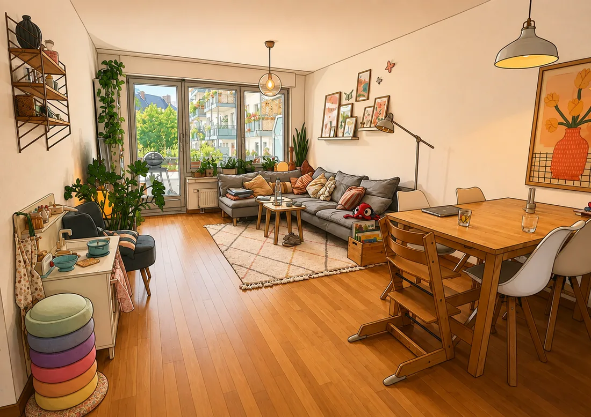
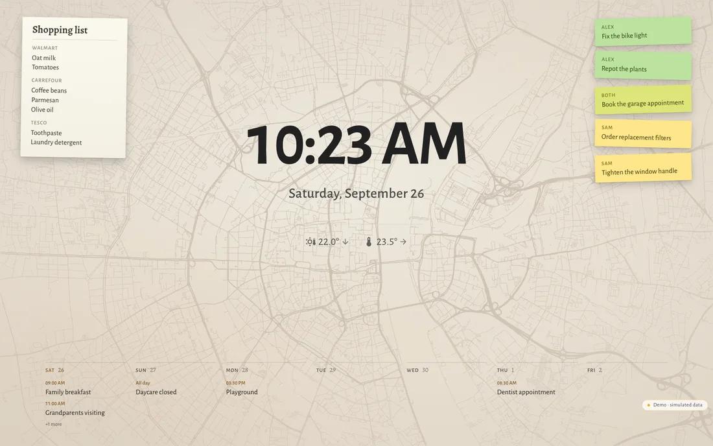
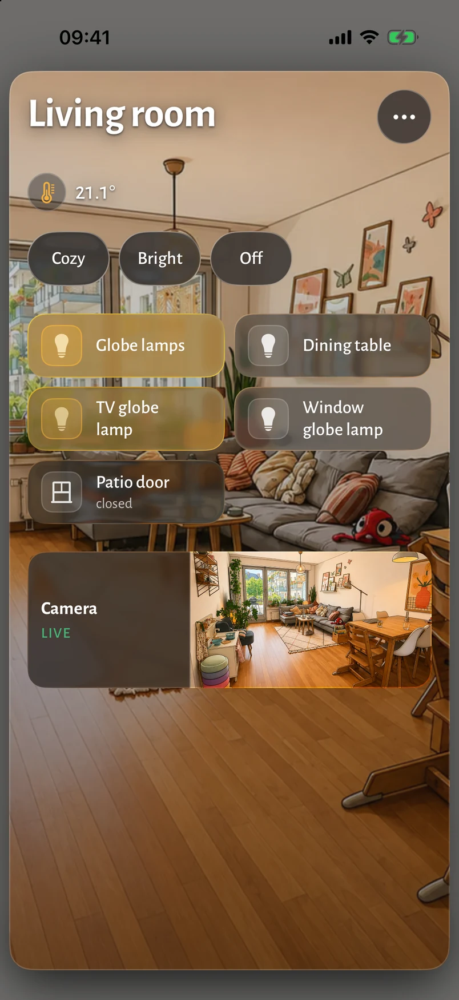

Less interface.
More home.
The everyday face of your smart home. Recognise a room, turn on the lights, get on with your day.
For Home Assistant. And for Apple Home with the native iPhone and iPad app.
Free. Open source. Public beta.
01 / A familiar place
Your rooms.
Instantly familiar.
The sofa by the window. The table where everything happens. Hauser puts the rooms you know at the centre of the screen, with their lights and scenes close by. Start with the included illustrations, upload a picture, or make a set from a photo of your own room.
The project’s own living room.

02 / The picture tells you
Same room.
A different moment.
By day, a sunlit room. In the evening, a warm glow. After dark, when the last light goes out, the picture settles into darkness. Hauser moves between prepared room images with the time of day and the room’s lights. You can see the change before reading a label.
Three actual room images from Hauser. This preview changes pictures; it is not connected to a home and does not control individual lamps.
03 / Part of the day
On the wall.
In your hand.
On your way past.
Before anyone touches it, the panel has a job. A clock you can read from across the room. The week ahead. A note you meant to remember. After a few idle minutes, standby brings the household’s day into view.
A closer look at standby


iPhone & iPad
Settle in.
Set the lights.
Open the living room and choose a scene, or tap a lamp. The room’s controls are together, right where you expect them. No need to remember which integration a light belongs to.
The native app works directly with Apple Home, without a Hauser server. With Home Assistant, it pairs to your Hauser installation. The web interface also adapts to a phone; available devices and features depend on the connection you choose.
Get the iOS beta04 / A personal project
Made for a home.
Shared with yours.
Free. No subscription.
Hauser began on its maker’s wall panel, for the people living in that home. The room you’ve seen here is that living room: sofa, plants, toys and all.
The idea is simple: the person switching on a light shouldn’t have to understand the system behind it. The code is open source, so you can see how it works and make it your own.
Everyday control needs no Hauser account or subscription. Home Assistant runs on your hardware; the iOS app can use Apple Home directly. Optional image generation and other integrations have their own external services.
Still in public beta. Compatibility is growing, and this is a personal project without guaranteed support. The iOS app is a TestFlight beta with time-limited builds. Read what’s changed.
05 / Come on in
Make yourself
at home.
Look around first. The live demo is the real web interface with simulated devices. Nothing connects to your home. When you’re ready, choose the way that fits your setup.
Open the demoiPhone & iPad · iOS 17+
I use Apple Home.
Install TestFlight, join the Hauser beta, then choose Apple Home. Your rooms and supported devices come from your Apple Home. No Home Assistant or Hauser server required.
Wall tablet, browser & paired iOS app
I use Home Assistant.
Install Hauser on your own hardware. The guided setup finds your areas and devices and lets you arrange your rooms. On iPhone and iPad, the native app pairs with this installation by QR code.
Home Assistant OS
Add the repository, install Hauser and open the web UI.
Add to Home Assistant Step-by-step guideHome Assistant Container or NAS
Run the same Hauser server with Docker Compose.
Docker installation guideWhat should I check before installing?
Hauser is beta software. Check the requirements and release notes for your setup. Keep the server on a trusted network; do not expose its port to the internet. See the remote-access guide for access away from home.
What happens if my home is unreachable?
The web panel keeps the room picture and dims its controls when Home Assistant is disconnected. Standby’s clock and date keep running on the panel. Device control needs the connection back. Connection help.
How does the rest of Hauser work?
The feature guide covers the calendar, shopping, media and more, with their integration requirements. For the thinking behind the interface, read the design system and interaction contract. The roadmap distinguishes what works today, what is experimental and what is planned.